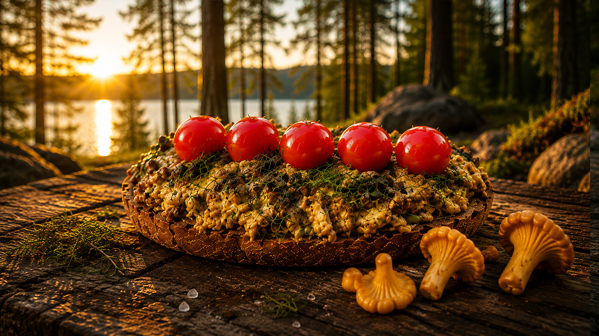

There is something special about finding food in the forest and turning it into a simple meal beside a quiet lake. On this solo camping adventure, I head into the wilderness to prepare fresh wild chanterelle mushrooms on crispy toast over an open campfire.
No restaurant, no kitchen and no complicated recipe. Just fresh mushrooms, good bread, a hot pan, a campfire and the peaceful sounds of nature.
The adventure begins in the forest, surrounded by pine trees, moss and the sounds of birds. Chanterelles are one of the most recognizable wild mushrooms, with their distinctive golden color and delicate shape.
Finding them in the forest is part of the experience. Instead of simply buying ingredients at a store, the meal starts with a walk through nature and the search for something growing wild.

After finding the mushrooms, it is time to return to the campsite and prepare the fire. A cast iron pan is placed over the heat while the chanterelles are cleaned and prepared for cooking.
As the mushrooms hit the hot pan, their natural aroma quickly fills the campsite. The gentle sizzling sound becomes part of the atmosphere, mixing with the crackling fire and the sounds of the forest.
The recipe itself is wonderfully simple. Golden chanterelles are cooked until tender and flavorful, then served over a piece of toasted bread.
The crispy toast provides the perfect contrast to the soft mushrooms. It is a simple combination, but after spending time outdoors, even a humble slice of bread with freshly cooked mushrooms can feel like a special meal.
Cooking outside changes the whole experience of eating. The fire provides the heat, the forest provides the atmosphere and every step takes a little more time.
There is no need to rush. Preparing the ingredients, tending the fire and waiting for the mushrooms to cook become part of the adventure itself.
There is no talking in this video. Instead, you can hear the natural sounds of the campsite: the crackling fire, mushrooms sizzling in the pan, birds in the forest and the quiet atmosphere around the lake.
These authentic outdoor sounds make the video perfect for relaxing, unwinding after a long day or simply enjoying the feeling of being somewhere far away from civilization.
Wild mushrooms on toast may be a simple meal, but the setting makes all the difference. Sitting beside a peaceful lake with a warm fire nearby, watching the evening light move through the trees, turns a few basic ingredients into something memorable.
This is what I enjoy most about solo camping: slowing down, preparing food with your own hands and enjoying the small moments that are easy to miss in everyday life.
If you enjoy solo camping, wild food, bushcraft, campfire cooking and relaxing nature sounds, sit back and enjoy this quiet journey into the forest.
Take a break from the noise of everyday life and spend a little time beside the lake, listening to the fire and watching a simple outdoor meal come together.